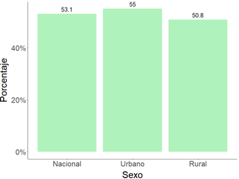
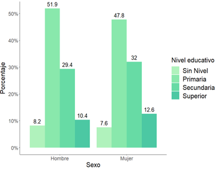
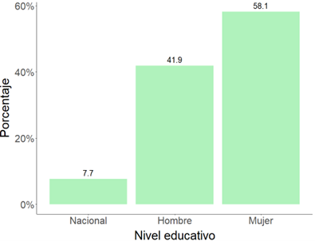
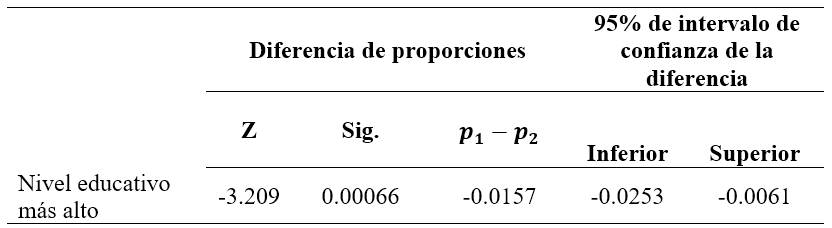
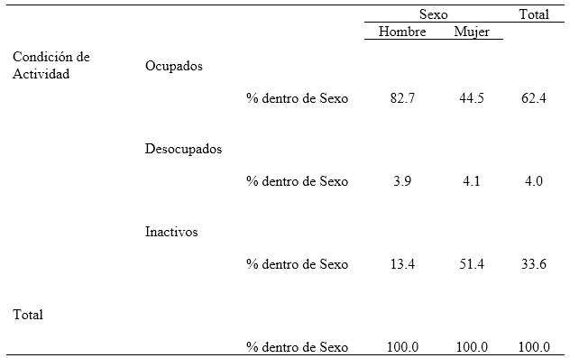
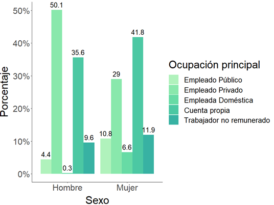
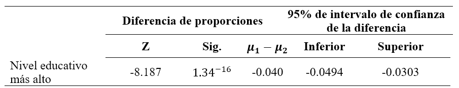
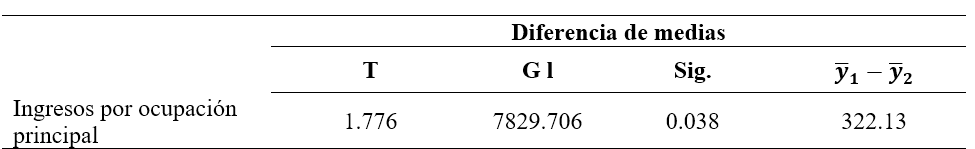
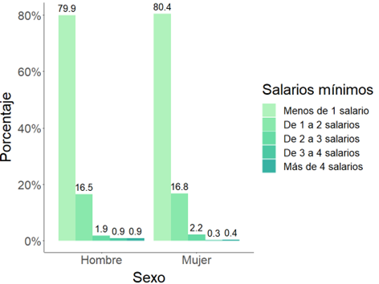

Brechas género en el mercado laboral hondureño
Análisis estadístico en SPSS
Hace ya un buen tiempo que las desigualdades de género en los mercados laborales se mencionan con más fuerza que nunca y abundantes estudios no han dejado de señalar que la subordinación y la discriminación laboral son una realidad para la gran mayoría de mujeres activas, sin embargo, aún queda mucho recorrido para alcanzar la plena igualdad de derechos y oportunidades entre hombres y mujeres. En ese contexto, este estudio pretende analizar las diferencias de género en Honduras en función del grado de ruralidad, nivel educativo, empleo e ingresos mensuales percibidos por trabajo, a partir de los datos nacionales de la Encuesta Permanente de Hogares de Propósitos Múltiples de 2019.
Objetivo principal
Verificar si existen diferencias por género entre la población hondureña respecto a su grado de ruralidad, nivel educativo, empleo e ingresos mensuales percibidos por trabajo, durante el año 2019.
Características demográficas
En el año 2019, la mayoría de la población hondureña eran mujeres (53.1%) y también la mayoría de la población residía en el área urbana (54.9%). La proporción de mujeres era ligeramente mayor en el área urbana (55.0 %) y menor en el área rural (50.8 %). Como se sabe, una alta proporción de personas se concentran en las ciudades más importantes del país (Tegucigalpa y San Pedro Sula) y para ese año, correspondió un a 32.4 por ciento de la población.

Características Educativas
En el año 2019, el 49.7 por ciento de la población hondureña estudió algún nivel de educación primaria, el 30.8 por ciento cursó al menos un grado de educación secundaria, apenas el 11.6 por ciento estudió en educación superior y el 7.9 por ciento de los hondureños que no tenía nivel educativo . Así, la mayoría de los hondureños tienen un nivel inferior en formación académica, reafirmando así las tasas de alfabetismo y el estancamiento en los niveles de educación reportados por el INE. Al comparar el nivel educativo de hombres y mujeres, se encontró que, aunque ambos géneros estudian la primaria en proporción similar, aunque ésta es menor para las mujeres (47.8%). Sin embargo, respecto a los niveles de educación secundaria había mayor porcentaje de mujeres (32.0%), así como en educación superior (12.6%), sugiriendo que la brecha de género en esos niveles se había reducido.

En 2019, apenas el 7.7 por ciento de la población alcanzó la educación universitaria (superior universitaria y posgrado). La representación de mujeres en esta área era considerablemente mayor (58.1%), en comparación con los hombres. Es evidente que las mujeres participaron más en los estudios universitarios, aunque la brecha de género es notoria en desventaja para los hombres.

Al determinar si existen diferencias entre el nivel superior universitario alcanzado, se realizó una prueba de hipótesis para diferencia de proporciones con un nivel de significancia de 0.05. Dado el valor p, se concluyó que había evidencia suficiente para asegurar que la proporción de hombres que alcanzan el nivel superior universitario es inferior a la proporción de mujeres

Características socioeconómicas
La proporción de mujeres ocupadas era menor 44.5 % que las mujeres desocupadas 51.4 %, sin embargo, la proporción de mujeres inactivas era muy alta. Además, al comparar entre género, la proporción de desempleo (4.1%) e inactividad (51.4%) eran ligeramente mayor para las mujeres

En 2019, casi en su totalidad, la población ocupada recibía ingresos mensuales por su trabajo (89.4%), mientras que el resto eran trabajadores no remunerados (10.5%). La mayoría de los hombres trabajaban principalmente en la empresa privada (50.1%), mientras que las mujeres trabajaban por cuenta propia (41.8%). Además, las mujeres también se posicionan como empleado público (10.8%) y en la empresa privada (29.0%). Sin embargo, trabajos como empleada doméstica no son ejercidos por los hombres (0.3%), pues tradicionalmente han sido asignados al género femenino y hay una proporción importante de mujeres que no recibían ningún tipo de remuneración por su trabajo (11.9%).

La tasa de desempleo abierto entre la población económicamente activa era de 6.1 por ciento, en el año 2019. Para los hombres, era del 4.5 por ciento y para las mujeres era de 8.5 por ciento, por lo que el desempleo afectó más a las mujeres y es una de las tasas más altas de la región. Para comprobarlo, se realizó una prueba de hipótesis de diferencia de proporciones, considerando un nivel de significancia de 0.05. Se concluyó que había evidencia suficiente para asegurar que la tasa desempleo en hombres era significativamente menor que la tasa de desempleo para las mujeres

Para identificar si no hay igualdad en los ingresos promedios mensuales entre género, se aplicó una prueba de hipótesis para diferencia de medias, con un nivel de confianza de 0.05 y asumiendo varianzas diferentes. Se demostró que, si existen diferencias entre los ingresos promedios mensuales percibidos por la ocupación principal entre mujeres y hombres, además si hay evidencia significativa para concluir que hombres perciben ingresos promedios mayores que las mujeres.

Respecto a los ingresos percibidos y en contraste con el salario mínimo correspondiente a su ocupación principal, la mayoría de la población recibe menos de 1 salario mínimo mensual (80.1%), y el resto percibe de 1 a 4 o más salarios mínimos. Entre género, el número de salarios mínimos que ganan las personas es casi igual, aunque menos del 1 por ciento ganan entre de 3 y 4 o más salarios.

Conclusiones
- Para el año 2019, en Honduras si existían diferencias entre hombres y mujeres, particularmente en el grado de ruralidad, nivel educativo, empleo, e ingresos mensuales percibidos.
- Las características de la población económicamente activa en Honduras presentan diferencias entre género. En cuanto al desempleo, el 6.1 por ciento de la población estaba siendo afectada por el desempleo abierto, tal que tasas de desempleo en los hombres eran significativamente menor que las tasas de desempleo en las mujeres
- En definitiva, existen diferencias en los ingresos percibidos por trabajo de la ocupación principal entre género. Además, asumiendo varianzas iguales y con nivel de significancia del 0.05, se demostró que hombres perciben ingresos promedios mayores que las mujeres, con una diferencia de L.337.54.
Habilidades
- R, R/Studio y SPSS
- Paquetes: ggplot2
- Estadística descriptiva e inferencial